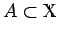

Inhalt Index DeskTop Bronstein

 Funktionalanalysis Stetige lineare Operatoren und Funktionale Stetige lineare Funktionale
Funktionalanalysis Stetige lineare Operatoren und Funktionale Stetige lineare Funktionale


Im HILBERT-Raum  definiert jedes Element
definiert jedes Element  mittels f(x)=(x,y) ein lineares stetiges Funktional mit der Norm . Und umgekehrt, ist f ein lineares stetiges Funktional auf
mittels f(x)=(x,y) ein lineares stetiges Funktional mit der Norm . Und umgekehrt, ist f ein lineares stetiges Funktional auf  , dann existiert genau ein Element , so daß gilt:
, dann existiert genau ein Element , so daß gilt:
Die Räume  und sind nach diesem Satz isomorph, weshalb man sie identifiziert.
und sind nach diesem Satz isomorph, weshalb man sie identifiziert.
Der Satz von RIESZ enthält einen Hinweis darauf, wie man die Orthogonalität in einem beliebigen normierten Raum einführen kann. Seien  und . Dann nennt man die Mengen
jeweils das orthogonale Komplement oder den Annulator zu A bzw. .